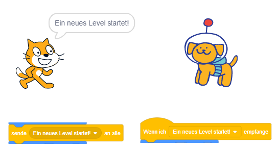

Was sind Nachrichten und wofür verwendet man sie?
Manchmal muss eine Figur einer anderen Figur etwas sagen (Levelwechsel,...)
Lösung:
die Figur sendet eine Nachricht und die anderen Figuren warten auf diese Nachricht
